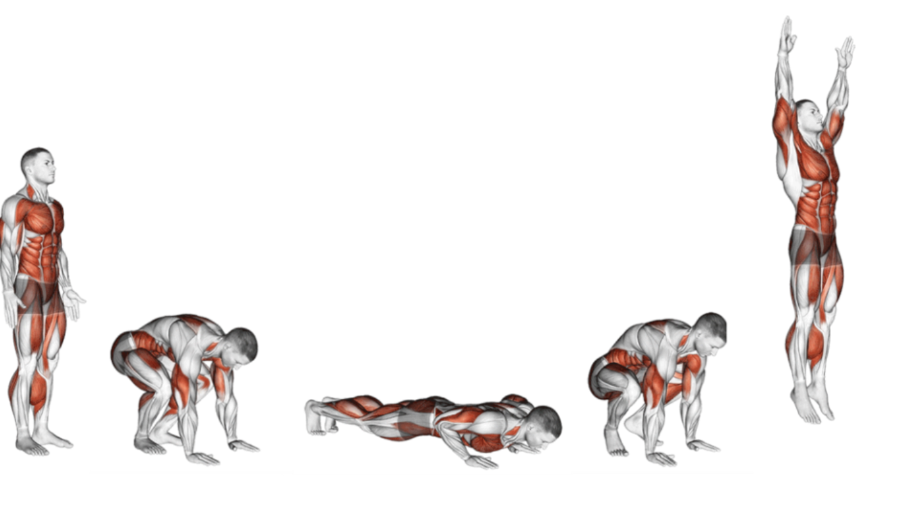
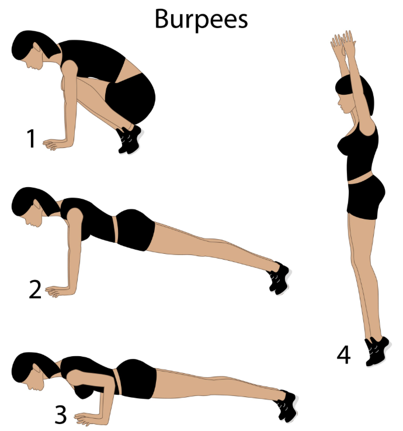

🌱 Calentamiento de cuerpo completo


Antes del circuito, mueve suavemente hombros, brazos, cadera, rodillas y tobillos. Puedes caminar unos minutos y hacer movimientos controlados, como sentadillas sin peso o elevaciones de brazos. El objetivo es entrar en calor gradualmente, no cansarte.
🎥 Ver calentamiento💛 Curl de abdomen

Acuéstate boca arriba con las rodillas flexionadas y los pies apoyados. Coloca las manos sobre el pecho o junto a la cabeza, sin tirar del cuello. Contrae el abdomen y levanta ligeramente los hombros y la parte alta de la espalda; no hace falta sentarse por completo. Baja lentamente y evita arquear la espalda.
🎥 Ver curl de abdomen💛 Plancha de abdomen

Apoya los antebrazos con los codos debajo de los hombros y extiende las piernas, apoyándote en las puntas de los pies o en las rodillas si estás empezando. Mantén el cuerpo alineado, el abdomen activo y respira con normalidad. Termina la repetición si ya no puedes mantener la postura.
🎥 Ver plancha💛 Plancha de abdomen con movimiento

Adopta la posición de plancha que puedas mantener con control. Mantén el abdomen firme y el cuerpo alineado, y realiza el movimiento indicado en la demostración sin hundir la cadera ni arquear la espalda. Haz movimientos pequeños; si lo necesitas, apoya las rodillas para reducir la dificultad.
🎥 Ver plancha con movimiento🔥 Burpees


La rutina propone alternar 30 segundos de trabajo rápido con 60 segundos de ritmo suave o descanso. Para el burpee, baja las manos al suelo, lleva los pies hacia atrás hasta una plancha, regresa y ponte de pie; el salto es opcional. Puedes llevar una pierna atrás a la vez o hacer el movimiento sin salto. Mantén el control y descansa si necesitas recuperar la respiración.
🎥 Ver burpees 🎥 Ver otra demostración🏆 ¡Terminaste!
¡Lo hiciste! Tu esfuerzo de hoy te hace más fuerte.